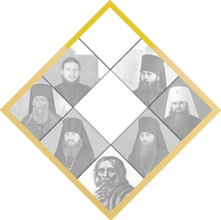

собор Ближняя
пустынка
«Отлучися от обители отец Серафим совершенно на житие в пустыню, месяца августа в дню 27 числа 1794 года», — говорит монастырский летописец о важном событии в жизни преподобного Серафима Саровского, возложившего на себя подвиг пустынножительства.
Располагалась пустынная келья в пяти верстах от монастыря в лесной чаще, на правом берегу реки Саровки. В 1890-м году было составлено ее описание: «Келлия была большая, пятистенная с сенями и крыльцом (с южной стороны), над коим был навесец на столбиках, крыльцо было о трех приступках. В сенцах был огорожен чуланчик, в котором было оконце; в келлии было только одно волоковое окно. Печь стояла в северо-западном углу келлии, и топилась из нея… Вокруг келлии был огород, обнесенный жердневым забором в столбах». На огороде старец выращивал овощи для своего пропитания, здесь же у него было несколько ульев для содержания пчел. Основным занятием преподобного во время проживания на Дальней пустыньке было исполнение молитвенного правила. В праздничные дни и по воскресениям он приходил на богослужения в монастырь.
Период пустынножительства занимает в биографии старца шестнадцать лет, из них три года (1000 дней и 1000 ночей) в житийной литературе отводится подвигу столпничества, т.е. молению на камне.
После смерти преподобного келья была вывезена в Дивеевскую общину. На Дальней пустыньке саровские монахи озаботились восстановлением кельи только в 1889 году. Новая келья отличалась размерами и внутренней планировкой – историческая правдоподобность никого из восстановителей не интересовала. Эта келья просуществовала до середины 1940-х годов и была разобрана.
В 1991 году, после передачи мощей преподобного Серафима Саровского Русской Православной Церкви и торжественного перенесения их в Дивеево, в Сарове начались работы по восстановлению мемориальных мест, связанных с именем великого старца. К пустыньке проложен тротуар, сделана автомобильная стоянка, установлен памятник старцу Серафиму, изготовленный скульптором В.М. Клыковым.
Келья преподобного воссоздана ко дню празднования 250-летия со дня рождения преподобного Серафима Саровского в 2004 году.
В 1730 году в Сарове стали строить первый каменный храм. Через 14 лет он был освящен в честь Успения Пресвятой Богородицы епископом Нижегородским и Алатырским Димитрием (Сеченовым).
Первоначально одноглавая Успенская церковь, построенная на средства московского купца Демидова (в обиходе именуемая Демидовской) имела достаточно скромные размеры – длина ее была не более 15 метров.
В 1777 году по проекту послушника Саровской пустыни Ивана Федорова (при монашеском постриге Иоакима) был построен Успенский собор высотой более 60 метров. При строительстве Демидовскую церковь не разрушили, а сделали алтарем нового собора. Такое оригинальное решение позволило сохранить в Сарове первую каменную церковь.
Через год Успенский собор был освящен. У его алтаря были похоронены преподобные Серафим Саровский и Марк Молчальник, над могилами которых была установлена часовня.
В 1825 году преподобный Серафим Саровский по новому явлению ему Божией Матери оставил затвор и принял на себя высший подвиг христианской любви к ближнему – старчество. По выходе из затвора батюшка Серафим делил свое время между Саровским монастырем и новой лесной кельей, так называемой «Ближней пустынькой». Пустынька находилась в двух верстах от обители, на высоком правом берегу реки Саровки. Речка располагалась неподалеку от Богословского источника, впоследствии переименованного в источник преподобного Серафима Саровского.
Изначально старец поселился в келье пустынника отца Дорофея, что в четверти версты от Богословского источника. В 1826 году для преподобного Серафима была построена новая келья, более пригодная для жизни.
Батюшка Серафим обратился с молитвой к Пресвятой Богородице о появлении целительного источника. Он забил рядом с пустынькой, на месте удара жезла Пресвятой Богородицы.
На Ближней пустыньке старец принимал посетителей и исцелял больных, пользуясь водой из родника. 9 декабря 1825 года случилось первое чудо – исцеление дивеевской сестры Прасковьи Степановны Шаблыгиной. Преподобный Серафим Саровский заставил ее выпить студеной воды, чем вылечил у нее кашель. При жизни иеромонаха Серафима источник привели в порядок, заключили в бревенчатый сруб, а дно его было выложено камнями. Многих принимал Серафим на Ближней пустыньке.
«Торопливо войдя в монастырь… была поражена необыкновенным зрелищем: между Успенским собором и противоположным одноэтажным домом точно волны двигались густые массы народа». Воспоминание паломницы, 1829 год.